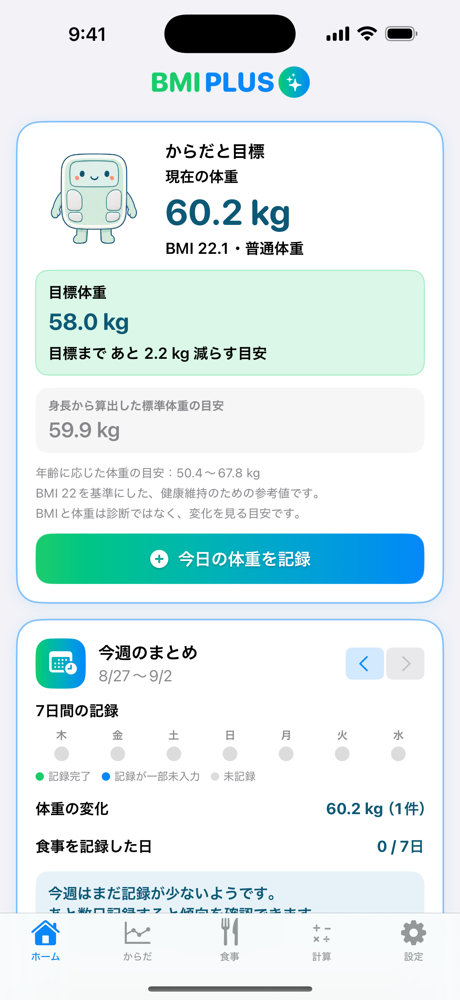
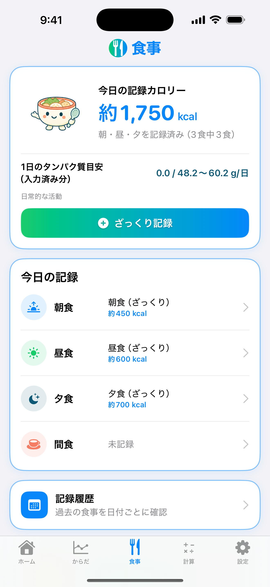
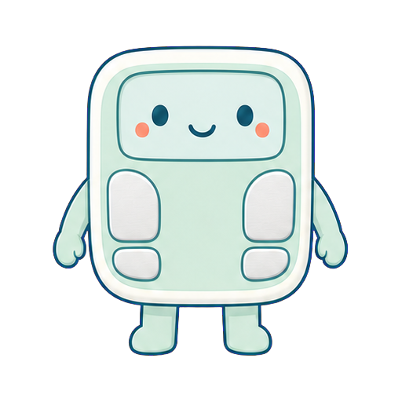

1
記録する
シンプルだから、続けられる。
からだと食事を、必要な分だけ
- 体重とBMIを記録
- 朝食・昼食・夕食・間食ごとに記録
- 夕食はざっくり入力にも対応



シンプルだから、続けられる。
毎日の「何にしよう」を、少し軽く。
記録した毎日を、あとから確認。
ホームの「今週のまとめ」で1週間の記録状況を確認。食事の記録履歴では、過去の朝食・昼食・夕食・間食を見返せます。
グラフを7日・30日・90日に切り替えて、変化の流れを確認できます。
WHO成人基準に基づくBMI分類を、診断ではなく一般的な目安として表示します。
個人の目標体重と、BMI 22を基準にした標準体重の参考値を分けて表示します。
朝食・昼食・夕食・間食を分けて、食べたものとカロリーを確認できます。
体重とBMIの推移を、7日・30日・90日で確認できます。
自分の記録とは別に、ご家族など自分以外の方の標準体重・BMI・必要エネルギー量・たんぱく質量の目安も、その場で確認できます。
身長からBMI 22の標準体重を計算。
身長と体重からBMIを計算。
年齢・性別・活動レベルから参考値を計算。
体重や目的に応じた一般的な目安を計算。